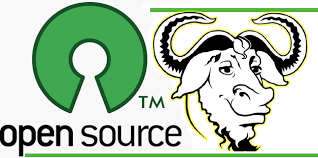
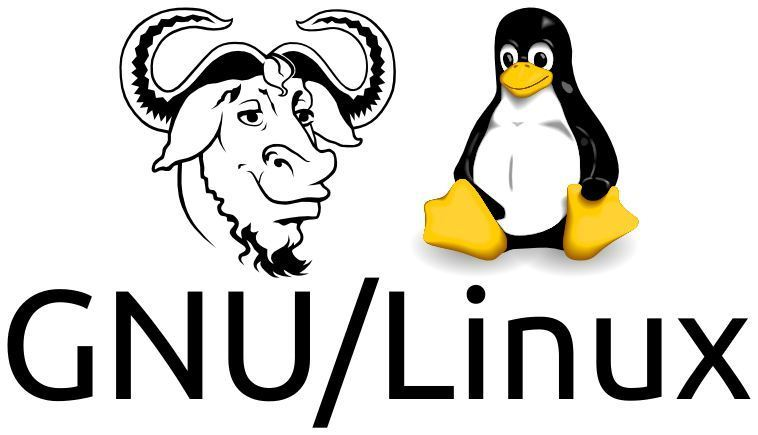
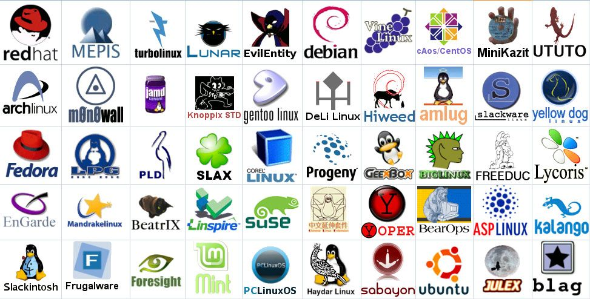

SEJARAH LINUX LENGKAP | Penciptaan & Perkembangan

Linux tidak tercipta begitu saja ,berbagai macam tahapan dan halangan harus ditempuh dengan keras untuk mewujudkan sistem operasi yang Free dan opensource.
Dikala itu teknologi masih terbatas,pemenuan teknologi komputer juga tergolong baru ,berbagai macam konsep harus dicoba untuk mewujudkan sistem operasi yang ideal seperti yang ada saat ini.
serangkaian sejarah panjang yang harus dilalui dalam proses penciptaan linux ditulis secara garis besar pada artikel berikut ini.
Berawal Dari GNU
Free & Opensource software foundation
Tanpa GNU mungkin linux tak akan ada, GNU memegang perang penting dalam penciptaan dan perkembangan linux, karena di GNU lah komunitas opensource berkumpul dan bekerjasama untuk membuat aplikasi yang bebas dan opensource.
OS UNIX Lahir Pertama Kali
Sejarah linux dimulai setelah kemunculan sistem operasi UNIX yang dikenalkan ke public sekitar tahun 1970-an yang dikembangkan dan direlease oleh AT&T Bell Laboratories .
Pengembangan sistmem operasi yang mirip UNIX (Unix like operating system)menjadi pupoler dan dikembangkan oleh banyak pihak.
OS BSD Menyusul UNIX
Pada tahun 1977, Computer Systems Research Group (CSRG) dari UC Berkeley,mengembangkan sistem operasi Berkeley Software Distribution (BSD) dan menggunakan kode UNIX edisi 6 yang dimiliki AT&T.
AT&T pun tidak terima karena kodenya digunakan untuk membuat BSD dan mengajukan gugatan hukum,setelah gugatan hukum pengembangan sistem operasi yang mengambil dasar kode BSD pun menjadi tersendat.
GNU Lahir Sebagai Pelopor dan Wadah Opensource
Pada tahun 1983,richard stallman mebuat projek GNU dengan target membuat sistem operasi yang Free (bebas)yang mirip dan kompatible dengan UNIX.

GNU merupakan kependekan dari “GNU’s Not Unix” dan GNU bukanlah suatu perusahaan profit melainkan wadah suatu komunitas yang menjunjung tinggi Free and Opensource software.
Free disini tidak diartikan gratis namun diartikan sebagai “kebebasan” karena aplikasi yang berlisensi GPL (GNU General Public License) memberikan 3 kebebsan untuk penggunanya yaitu bebas untuk :
Kebabasan itu tidak dimiliki oleh proprietary software (software komersial)
Projek GNU dimulai pada tahun 1984 dengan pembuatan software,compiler,editor,textformatters,GUI,libraries,modules dan masih banyak lagi ,dalam proses pembuan nya didesain agar kompatible dengan sistem operasi yang sudah ada yaitu UNIX, pilihan ini didasarkan bahwa UNIX telah membuktikan desain yang unggul dan portable.
Dalam proses pembuatannya melibatkan banyak personal yang berasal dari komunitas GNU itu sendiri.
Linus Torvalds dan Kelahiran Linux
Pada tahun 1990 GNU telah membuat semua komponen untuk membuat suatu sistem operasi dari mulai Compiler,libraries,aplikasi,user interface dan lain sebagainya dan hanya satu yang belum selesai yaitu Kernel yang menjadi inti dari sebuah sistem operasi.

Linus Mencoba Membuat Kernel Sendiri
Pada tahun 1991 seorang mahasiswa jurusan Computer science dari universitas Helsinki (University of Helsinki) menulis kernel untuk dipakai di komputernya sendiri menggunakan bahasa C dan dicompile menggunakan GNU C Compiler ,kernel milik Linus dibuat tanpa mengutip kode kernel UNIX, kernel UNIX hanya dijadikan bahan inspirasi oleh Linus.
Kernel yang dibuat oleh Linus lalu dipublish untuk kalangan luas (opensource) dan semua orang bisa menggunakan dan mengembangkan nya secara “free”.
Kernel inilah yang nantinya akan menjadi Linux kernel yang kita pakai hingga saat ini sebagai hasil pengembangan dari komunitas opensource dari waktu kewaktu.
Asal Muasal Nama Linux
Nama linux tidak muncul dan dipakai begitu saja untuk kernel buatan linus, sempat dipakai beberapa nama yang terdengan aneh oleh kita sekarang.
Oleh Linus dinamai Freax
Linus travalds ingin menyebut temuannya dengan nama Freax yang merupakan gabungan dari free freak dan X yang mengacu pada Unix.
saat dia bekerja menulis kernel dia menyimpan dalambentuk file dan diberi nama Freax hingga hampir setengah tahun.
Linus sempat terbesit untuk memakai nama Linux
Linus sebenarnya telah terbesit di fikiran nya untuk menamai temuan nya dengan nama Linux namun dia anggap itu terlalu egois (karena mengandung namanya sendiri).
Untuk menfasilitasi proses pengembangan (development) maka file diupload ke FTP server (ftp.funet.fi) pada bulan september 1991.
Nama Freak dibah ke Linux Karena dianggap JELEK
Ari Lemmke dari universitas Helsinki yang saat itu menjadi relawan administrator FTP berfikir bahwa nama Freax untuk sebuah kernel tidaklah bagus untuk didengar,lalu tanpa persetujuan Linus dia mengubah nama kernel tersebut dengan nama Linux.
Namun Linus tidak keberatan akan nama tersebut dan ikut menggunakan nya juga.

Linux dibawah lisensi GNU GPL
Saat awal dipublish kernel milik linus menggunakan lisensinya sendiri dan ada larangan /tidak boleh digunakan untuk tujuan komersial karena dia membuat kernel tersebut didedikasikan untuk komunitas opensource.
Software yang digunakan untuk membuat linux semuanya menggunakan aplikasi yang berlisensi GNU GPL (lisensi untuk software bebas/free) dan agar linux dapat digunakan sebagai sistem operasi yang utuh linux memerlukan komponen seperti shell,compilers,library dll yang semuanya dibawah lisensi GNU GPL.
Akhirnya pada tahun 1992 linux versi ke 2 direlease ke public pada bulan desember dibawah lisensi GNU GPL sehingga linux disebut dengan nama GNU/LINUX.
Pada peluncuran linux versi pertama linus hanya menuliskan dalam dokumentasinya bahwa untuk bisa menggunakan Linux seutuhnya memerlukan software yang disediakan oleh GNU.
Sejarah Pinguin si Maskot Linux
Pada tahun 1996 Linus Torvalds mengumumkan maskot Linux secara resmi yaitu sebuah Pinguin dengan nama Tux.
Linus Pernah Digigit Pinguin
Linus menjelaskan dia memilih pinguin karena dia pernah mengalami kenangan yang buruk dengan hewan tersebut yaitu pernah digigit oleh seekor pinguin kecil saat berkunjung ke kebun binatang di australia.
Kontes Logo Linux
Linux mengadakan kontes mendesain logo linux (pinguin) dan dimenangkan oleh Larry Ewing dengan gambar pinguin sedang duduk bernama Tux , Tux mengacu pada Torvalds’ UniX dan berarti juga tuxedo ,semacam jas yang warnanya mirip dengan si pinguin tersebut.
Komunitas dan Distro Linux
Kontribusi pekerjaan pengembangan linux terbesar berasal dai komunitas pengguna linux itu sendiri yang terdiri dari ribuan programmer yang tersebar diseluruh penjuru dunia,mereka menggunakan linux dan memberi saran untuk membuat linux jauh lebih baik setiap harinya kepada pengembang linux.
Beberapa perusahaan yang meberikan linux service juga ikut andil dalam pengembangan linux ,bukan hanya kernel namun aplikasi pendukung yang disertakan dalam distrubusi linux seperti auxilary software.

Perusahaan / proyek yang terorganisir mengembangkan linux sendiri dan tetap mendistribusikan nya secara free,karena semua linux berlisensi GPL.
Untuk menghasilkan uang sebagai penutup biaya operasional perusahaan /projek yang terorganisir hanya menyediakan jasa konsultan dan service untuk pengguna linux enterprise.
Komunitaas yang tergabung dan berbadan hukum (perusahaan/projek terorganisir) atau yang kita sebut sekarang dengan distro linux (Linux distribution) mengembangkan dan mendistribusikan linux dengan versi mereka sendiri dimulai dari projek Slackware,Debian,Redhat,SUSE .
Walau menggunakan base kernel yang sama namun untuk aplikasi dan utilitas yang disediakan oleh distro tersebut berbeda-beda,perbedaan ini tidaklah signifikan hanya sebagian command dan hierarki yang berbeda dari distro yang lain.